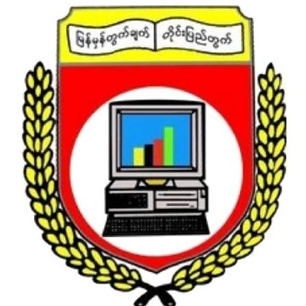
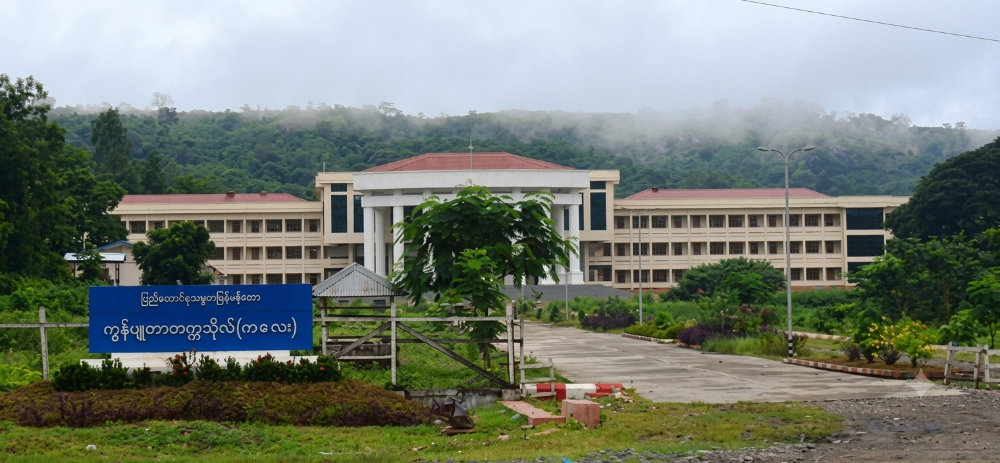
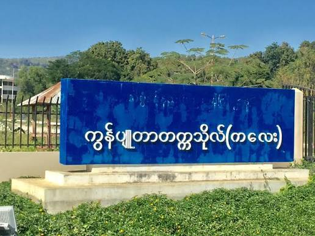
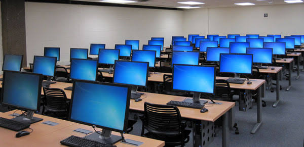
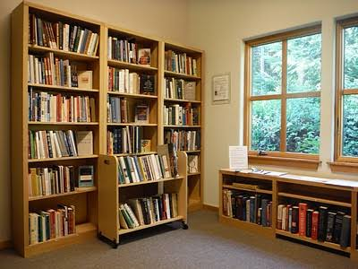

Excellence in Computer Science & Technology

The University of Computer Studies, Kalay (UCSK) is an IT and computer science university of Myanmar. The university offers bachelor's and master's programs in computer science and technology. It was opened on 27 September 2001 as Government Computer College (GCC) and promoted to Computer University on 20 January 2007. UCSK is located 10 miles from Kalaymyo, Sagaing Region and 14 miles from Kalewa, near Ayethayar village, spanning across 38.6 acres.
Kalay City, Sagaing Region, Myanmar.
(Located near Ayethayar Village, 10 miles from Kalaymyo on Kalay-Kalewa Road)
(Subject to Annual Qualification Criteria)



Kalaymyo, Sagaing Region, Myanmar